CS 180: Face Morphing
|
IntroductionIn this project, I explore image warping through affine transformations of corresponding polygon meshes in pairs of images. This has various applications, from creating seamless morphs between images to generating an average face from a population. |
1. Defining CorrespondencesI began by creating a custom class for correspodence selection using Matlotlib's .ginput() functionality. This allowed me to select correspondence points between any pair of images with ease. The correspondence data between a pair of images was stored as a JSON file for persistence. I followed this up by creating a triangular mesh for these correspondences using Delaunay triangulation, which partitions the convex hull of the point sets into sets of unique triangles. We can perform affine transformation and inverse warps on these triangles to achieve our desired morph. Below are images of Christian Bale and James Franco from Martin Schoeller's "Close Up" series with correspondences and Delaunay triangles overlaid.
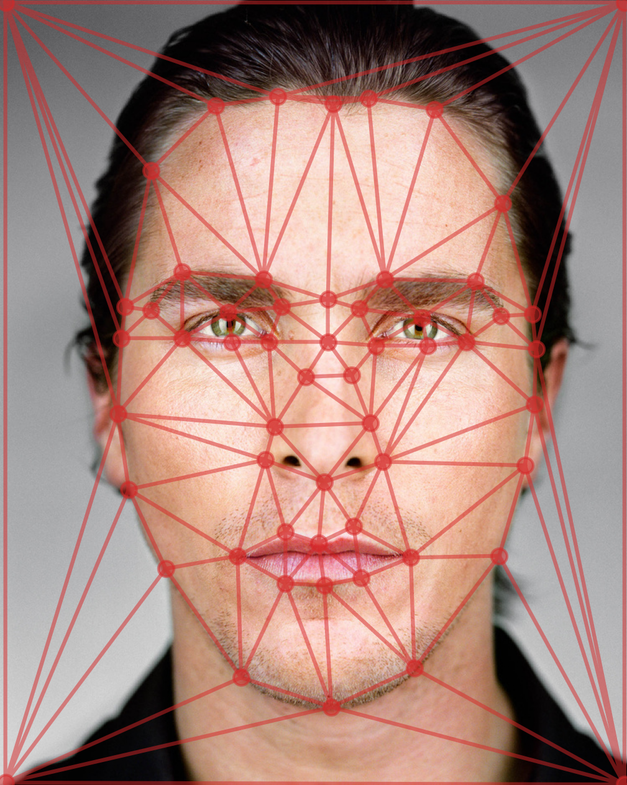
Christian Bale (Triangulated) 
James Franco (Triangulated) |
2. Computing the "Mid-Way Face"Computing the mid-way face between two images involves some interesting math. We begin by creating an weighted average point set using the correspondence sets, and create a triangulation for this as well. The weighting for the mid-way face is \(0.5\), though we will change this later on to achieve a morphing effect. We then loop through the triangles, and determine a matrix \(A^{-1}\), or the inverse affine transformation matrix between an averaged triangle and it's corresponding triangle in the image we aim to morph. We use a polygon mask and bilinear interpolation to retrieve the appropriate data from the source images and map it to their corresponding (initially blank) output images. We then cross-dissolve the output images with the aforementioned weight to obtain the mid-way face. Here is the mid-way face between Christian Bale and James Franco.
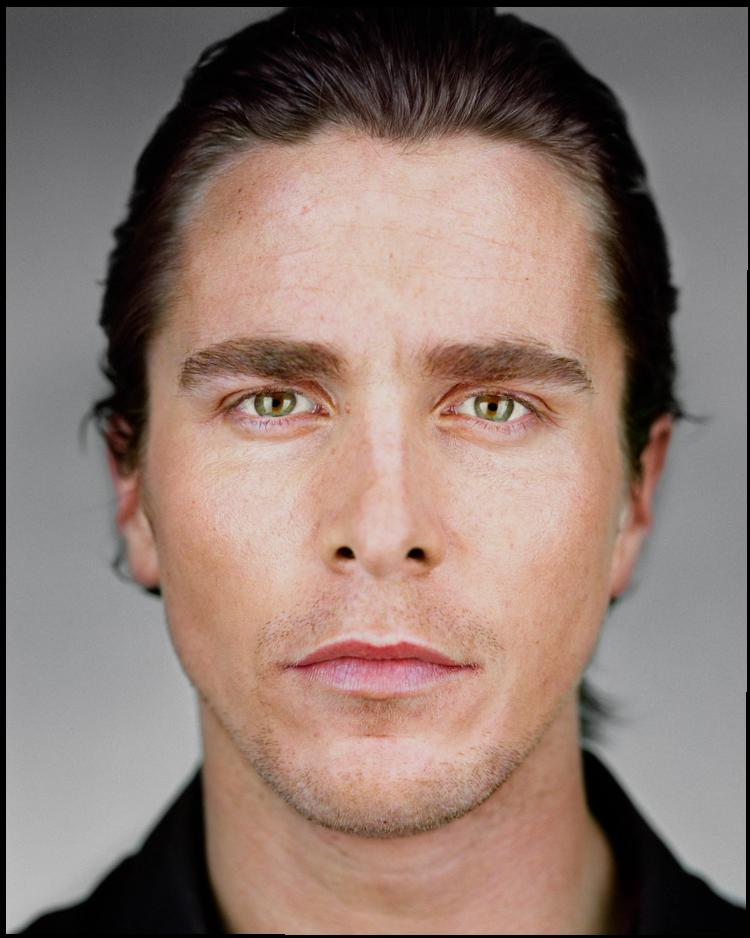
Christian Bale
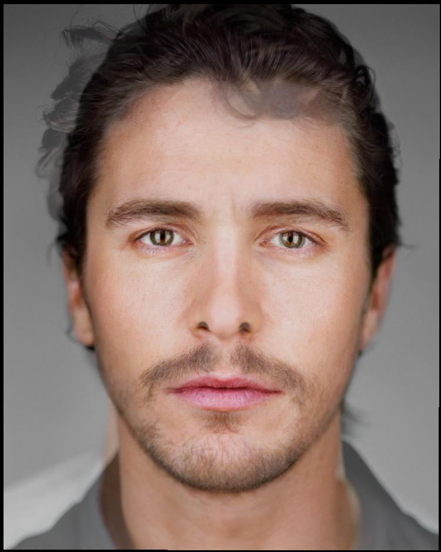
Mid-Way Face 
James Franco |
3. The Morph SequenceWe can now generate a morph sequence by simply iterating through a set of weights, generating a face for each weight, and stiching these images together in sequence. I provide some example sequences below. To the left is a sequence between Christian Bale and James Franco. It uses weights in a range from \([1,0]\) with increments of size \(0.05\). It has \(40\) frames, with each frame lasting for around \(67\) milliseconds. To the right is a sequence between Lionel Messi, Roger Federer, Kobe Bryant, Mark Webber, and Mike Tyson. It uses the same weighting scheme, and has \(100\) frames, with each frame lasting for around \(67\) milliseconds. 
Bale-Franco Morph Sequence 
Athlete Morph Sequence |
4. The "Mean Face" of a PopulationFor this part, I used a dataset from the FEI Face Database to compute average faces for smiling and neutral subsets. To begin with, I parsed the ".pts" files, added corner points, and saved them as JSON files. I used these processed points to create average point sets for smiling and neutral images. Then, I warped the faces in each subset to the average point set and cross-dissolved to obtain average faces. Below are some examples of subjects from each subset with their faces morphed to the subset average, followed by the average face for the subset.
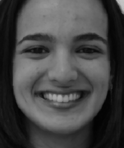
Smiling Subject #1 
Warped
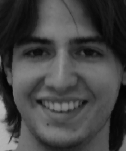
Smiling Subject #2
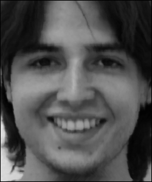
Warped
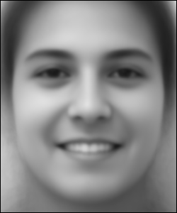
Average Smiling Face 
Neutral Subject #1
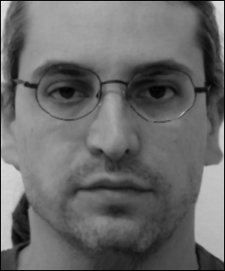
Warped
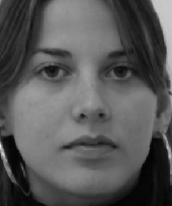
Neutral Subject #2
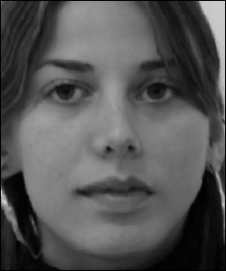
Warped
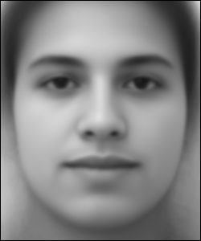
Average Neutral Face Given this, we can easily warp other images to the average face geometries. Here is Kanye West warped to the average smiling and neutral faces.
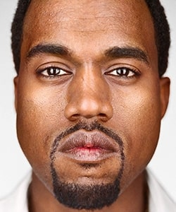
Kanye West
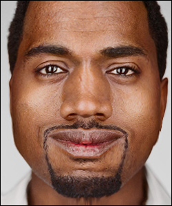
Kanye (Smile Warp)
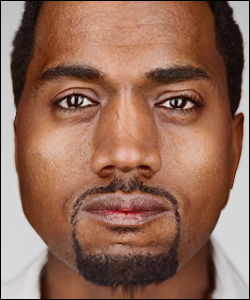
Kanye (Neutral Warp) We can also warp the average face to Kanye's geometry. Here I warp the averge face from the entire dataset to Kanye's face.
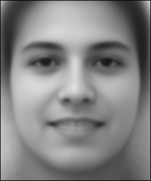
True Average Face
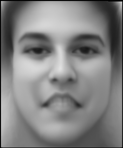
Average Warped to Kanye |
5. Caricatures: Extrapolating from the MeanLastly, we can use unorthodox weights to create caricatures. Below are some some caricatures generated with varying weight \(w\) using the smiling set.
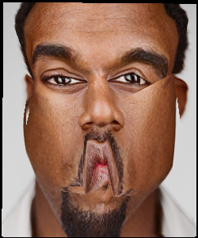
\(w = -2.0\)
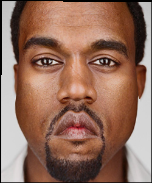
\(w = -0.5\) 
\(w = +1.5\)
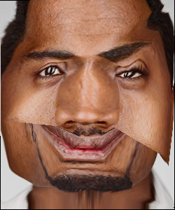
\(w = +3.0\) |
6. Bells and WhistlesFor my Bells and Whistles, I morphed George Clooney using an image of the average Bollywood actor's face.
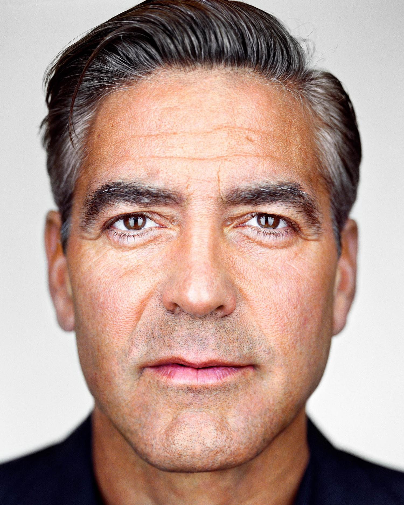
George Clooney
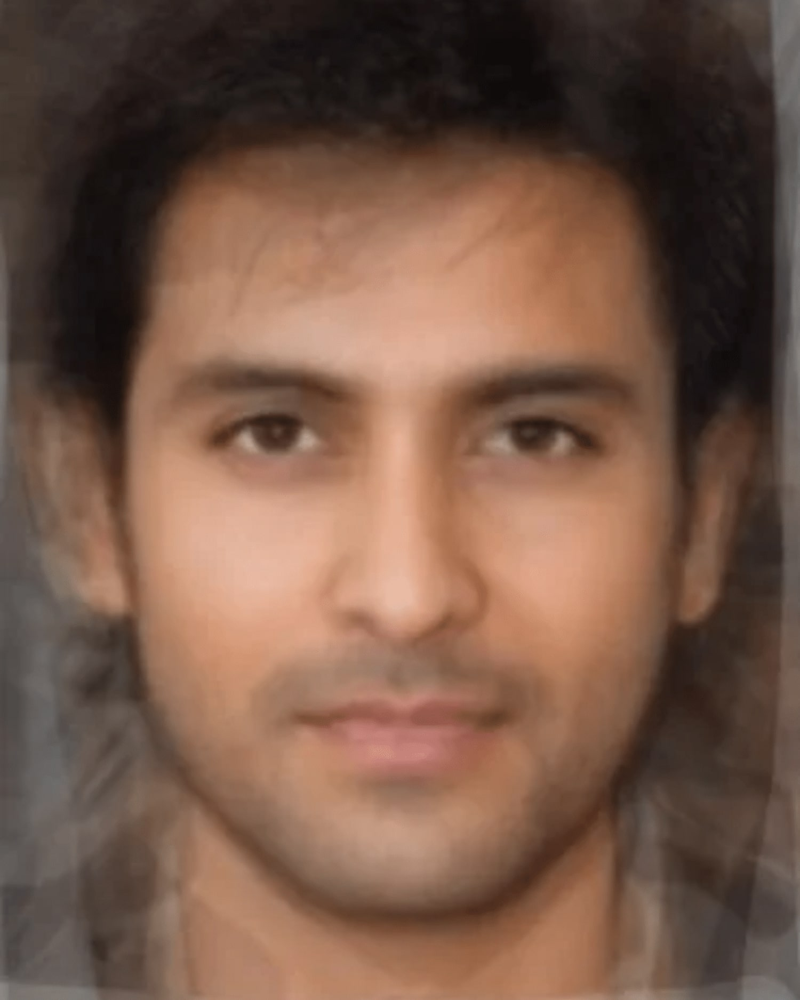
Average Bollywood Actor I produced three morphs. First, I morph George's geometry to match the average face. We see quite a clear difference in forehead and eye shape. Next, I morph the average face's geometry to match George's geometry. Here, George's jawline is quite evident. Lastly, we combine these two morphs to get a Bollywood version of George Clooney.
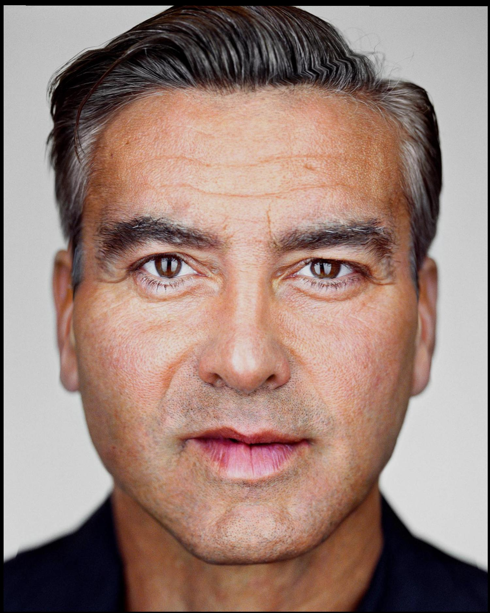
Clooney with Average Face Geometry
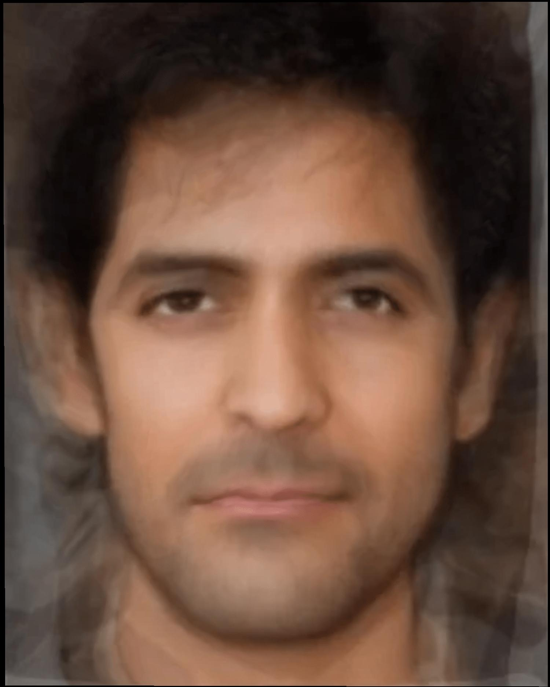
Average Face with Clooney Geometry 
Total Morph |